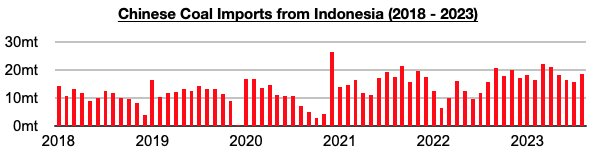
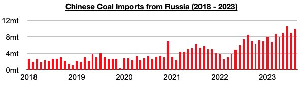
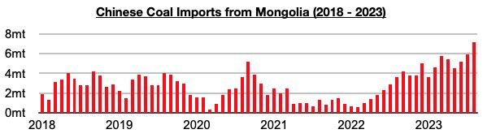
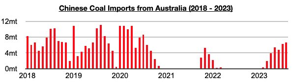

Indonesia and Russia have remained China’s primary sources of coal imports, and imports from Australia have set another three-year high. Among the major exporters, of note is that August most recently saw China's coal imports from Indonesia total 18.7 million tons. This is up from July by 2.9 million tons (18%) and is also up year-on-year by 2.9 million tons (18%).

Imports from Russia in August totaled 10 million tons. This is up from July by 1 million tons (11%) and is up year-on-year by 1.5 million tons (18%). China's coal imports from Russia remain near record highs. The last sixteen months have now seen Russia contribute 24% of China’s coal imports, and during this period imports have risen year-on-year by 42 million tons (51%). The previous sixteen months saw Russia contribute 18% of China’s coal imports.

Imports from Mongolia in August totaled a record 7.2 million tons. This is up from July by 1.3 million tons (22%) and is up year-on-year by 3.6 million tons (100%).

Imports from Australia in August totaled 6.7 million tons. This is up July by 400,000 tons (6%), is up year-on-year by 6.6 million tons (6600%), and has marked another three-year high.
